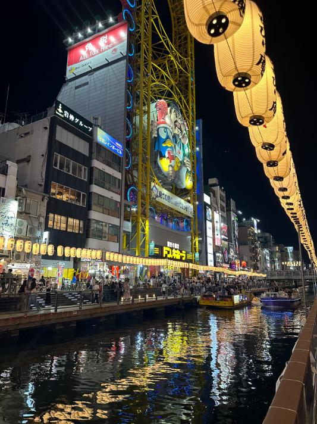
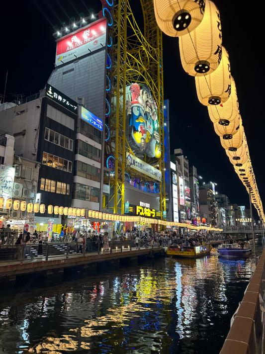
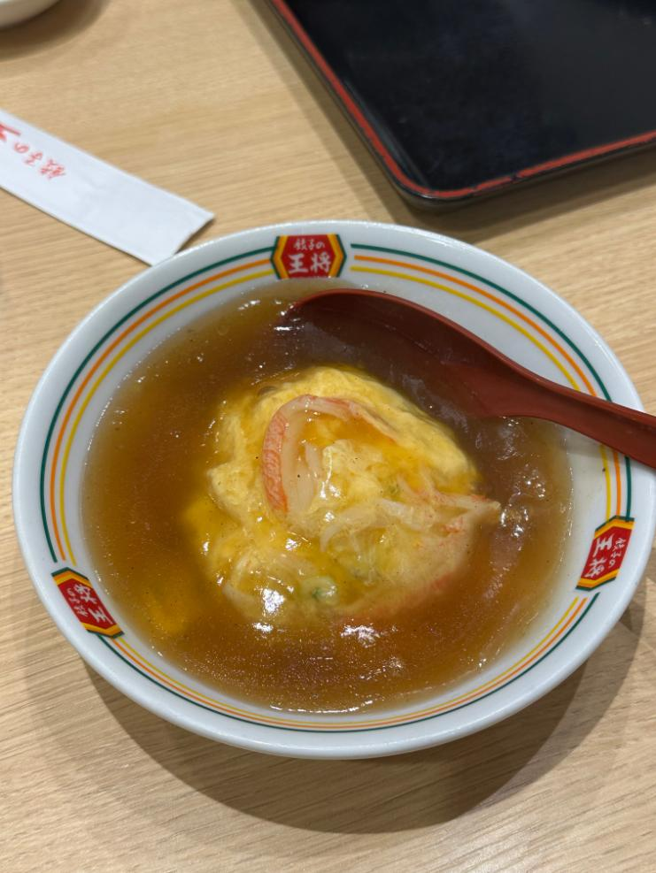
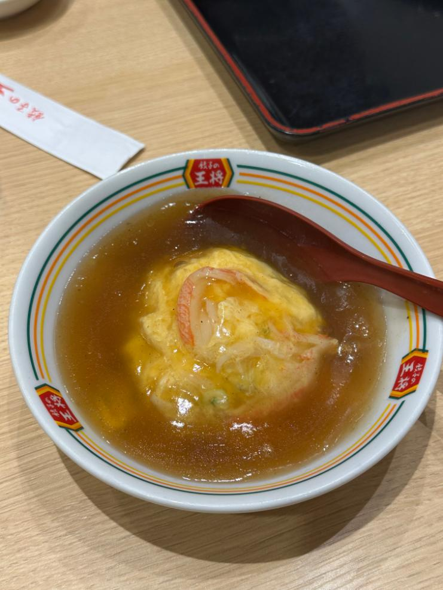
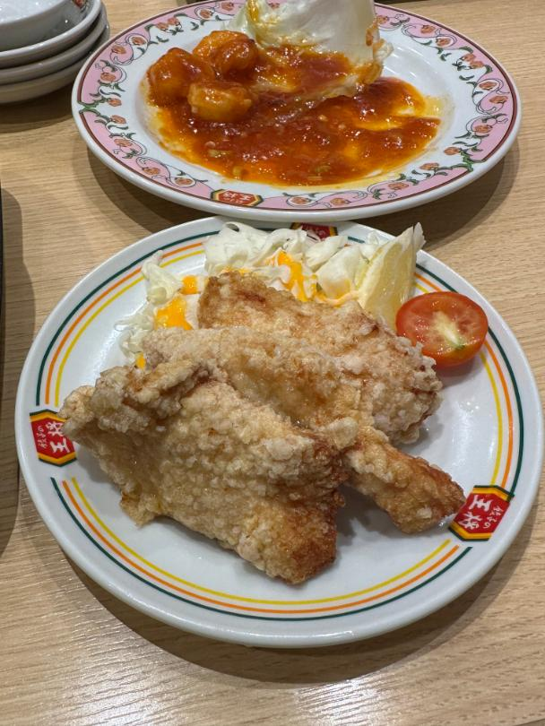
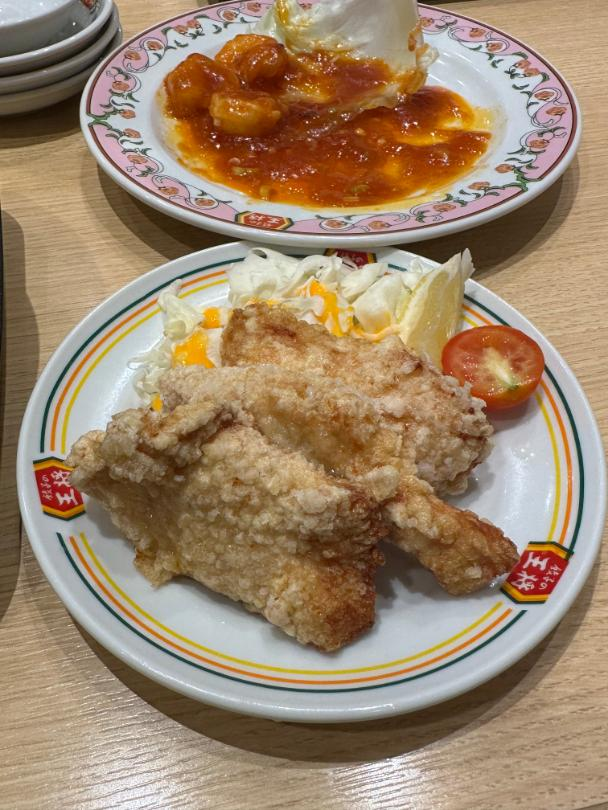
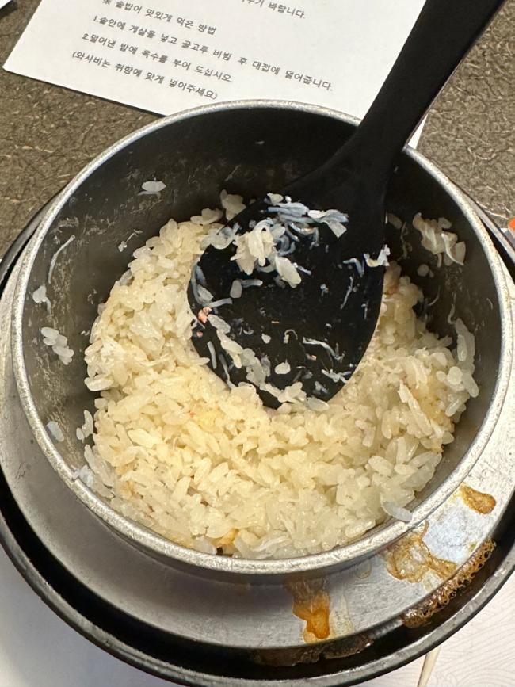
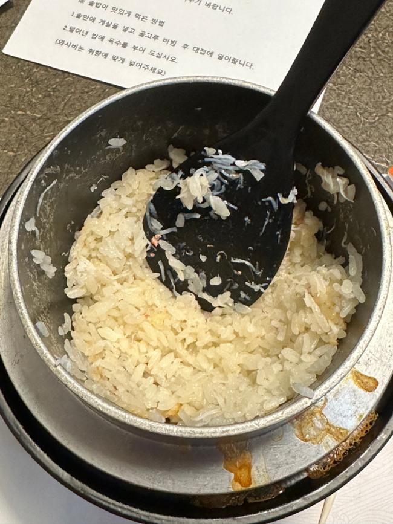
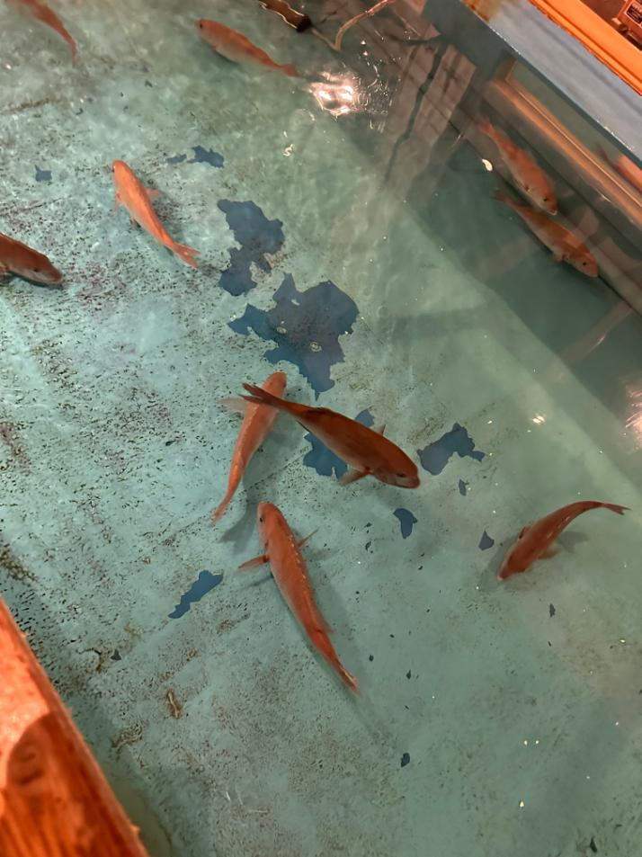
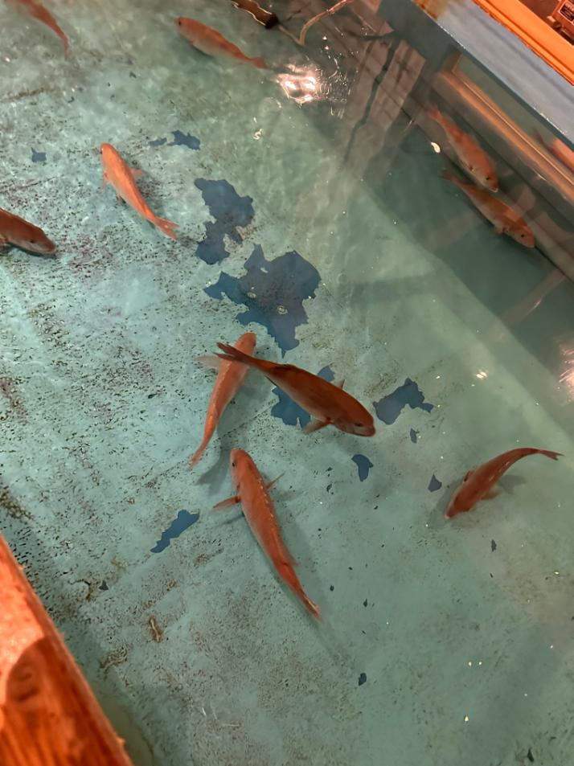

🍣 일본 여행
(2023-08-13 ~ 2023-08-24)
📍 방문한 주요 장소
1. 글리코상


 



7년 만에 다시 오사카에 왔다.
해외여행에서 같은 곳을 두 번 찾는 건 이번이 처음인데,
도착해보니 왠지 모르게 반가운 느낌이 들었다.
글리코상 앞에서는 숨겨진 명당 포인트에서 인증샷도 남기고,
밤에는 오사카 도톤보리 야경을 배경으로 야간 크루즈도 탔다.
익숙하면서도 또 다른 분위기의 오사카. 좋았다.
2. 나라 공원 ⭐


더운 날씨에 땀으로 흠뻑 젖긴 했지만,
거리 곳곳에 사슴이 돌아다니는 모습이 꽤 인상적이었다.
직접 간식도 줄 수 있어서 색다른 경험이었고,
냄새는 약간 났지만 그래도 기분은 좋았다.
3. Universal Studio Japan
입장료 : 95,000원


이번 여행에서 가장 기억에 남는 건
'닌텐도 월드'와 '더 플라잉 다이너소어'였다.
원래 오전에 ‘더 플라잉 다이너소어’를 탈 계획이었는데,
갑작스러운 기계 오류로 운행이 중단돼서 결국 못 타고 나와야 했다.
게다가 ‘닌텐도 월드’는 친구 한 명이 예약이 되지 않아서 못 들어갈 뻔했는데,
다행히 밤에 가보니 모두 함께 입장할 수 있었다.
이런 우여곡절이 있어서 그런지,
결국 놀 수 있게 되었을 때 더 재밌게 즐길 수 있었던 것 같다.
4. 카이유칸 수족관
입장료 : 2,700JPY

말로만 듣던 개복치를 실제로 볼 수 있어서 신기했고,
물개가 등을 벽에 기대고 수영하는 모습이 심쿵했다💘
다만, 사람이 정말 많아서 조금 답답했다.
5. 나라 축제


일본 애니에서 보던 축제가 궁금해서 일부러 찾아가봤다.
기모노를 입은 사람들과 길게 늘어선 포장마차가 인상적이었고,
생각보다 분위기가 잘 살아 있어서 만족스러웠다.
6. 기요미즈데라(청수사)


기요미즈데라는 유네스코에 등재된 사찰로,
일본의 전통적인 분위기를 느낄 수 있는 유명한 장소다.
사찰 안에 흐르는 맑은 물은 소원을 빌며 마시는 문화도 있다.
무더운 날씨에 손이랑 팔을 씻을 수 있어서,
더위를 식히기 너무 좋았다.


8. 잔카라

일본 노래방에 가고 싶어서 들렀다.
한국 발라드랑 아이돌 노래도 있었고,
복도에서 마실 것도 뽑아서 가져갈 수도 있었다.
다 부르고 나가려는데 직원이 안 와서 조금 당황했다.
지나가는 사람이 도와줘서 무사히 결제할 수 있었다.
9. 덴덴타운

애니 관련 상점들이 밀집해 있고,
거리 곳곳에서는 메이드복을 입은 사람들이 가게를 홍보하고 있다.
전반적으로 분위기가 활기차고 독특해서,
가볍게 둘러보기에 괜찮은 장소였다.


11. 니지겐노모리


나루토, 짱구 등 다양한 테마파크가 모여 있는 곳.
여러 가지 액티비티가 준비되어 있지만,
아쉽게도 비가 많이 내려 체험은 하지 못했다.
전체적으로 규모도 꽤 크고 만족스러워서,
관심 있는 테마파크가 있다면 들러보는 것도 좋을 것 같다.


🍖 음식 이야기
1. 真っ赤ならーめん - 토마토 라멘
(우메다, 오사카)

토마토라멘이 신기해서 들어가본 가게.
처음엔 맛이 있을까 의문이 들었지만,
이상하지 않고 맛있게 먹었던 느낌이 남아 있다.
2. 金龍ラーメン - 킨류라멘
(도톤보리, 오사카)
오사카에서 유명한 라멘집.
특이하게 라멘에 김치가 들어가는데,
전체적으로 맛은 꽤 괜찮았다.
다만 차슈도 그렇고,
전반적으로 라멘이라기보다는 국밥을 먹는 느낌에 가까웠다.


4. 九州らーめん亀王 - 규슈라멘
(도톤보리, 오사카)
뒤늦게 알았는데,
여기도 토마토라멘으로 유명한집이었다.
무난하게 맛있었다.
하지만 자리가 다 먹은 식판을 놓는 곳 바로 옆이라
비위생적으로 느껴져 불쾌했다.


 


 



12. かに道楽 道頓堀 東店 - 가니도라쿠 ⭐
(도톤보리, 오사카)


 


가격대가 다소 있는 편이긴 했지만,
전체적으로 만족스러웠고 맛도 기대 이상으로 좋았다.
부담 되는 가격이지만,
한 번 더 방문할 의향이 있다.
13. 京都貴船 料理旅館 ひろ文 - 나가시소멘 ⭐
(기후네 신사, 교토)


현장에 도착하면 먼저 번호표를 받고,
근처를 둘러보다가 다시 돌아오면 된다.
폭포 덕분에 주변이 무척 시원했고,
분위기도 정말 좋았다.
음식 맛도 물론 만족스러웠고,
전반적으로 기분 좋은 시간이었던 곳이다.
14. 釣船茶屋ざうお難波本店 - 자우오
(난바, 오사카)

 



직접 낚시를 할 수 있는 곳으로,
자신이 잡은 물고기를 원하는 방식으로 요리해준다.
지금까지 먹어본 생선 요리 중에서
손에 꼽을 만큼 맛도 기대 이상이었다.


18. 짬뽕
(킨텐스니뽄바시, 오사카)
직원이 아주머니셨는데,
아주 친절하셔서 인상 깊게 기억에 남는다.
특이하게 위에 계란 노른자가 올라가는데,
맛은 그냥 평범한 짬뽕이었다.


20. 焼肉ライク - 야키니쿠 라이크 ⭐
(오사카)

혼밥하기에 최적화된 분위기로,
혼자서도 편하게 식사할 수 있었다.
가성비도 괜찮았고,
맛도 만족스러웠다.


📚 여행 수단 정리
✈️ 항공권
입국 (부산 -> 오사카)
| 구분 | 항구 | 시간 | 날짜 |
|---|---|---|---|
| 출발 | 부산항 | 17:00(?) | 2023년 08월 12일 |
| 도착 | 오사카 | 09:00(?) | 2023년 08월 13일 |
출국 (후쿠오카 -> 부산)
| 구분 | 공항 | 시간 | 날짜 | 항공사 |
|---|---|---|---|---|
| 출발 | 간사이국제공항T1 | 18:55 | 2023년 08월 24일 | 티웨이항공 (TW222) |
| 도착 | 김해국제공항I | 20:35 |
🛌 호텔
1. Near Tsutenkaku Tower, Namba
(2023-08-14 ~ 2023-08-20, 6박)
일반 아파트라 리셉션 같은 건 없었고,
현관 앞 자물쇠에 번호를 맞춰 열쇠를 꺼내야 했다.
처음 보는 다이얼 자물쇠여서
거의 30분 동안 낑낑대다가 겨우 풀었다..
내부는 깔끔했고,
세 명이 함께 지내기에 불편함 없었다.
2. Hotel Shin Imamiya
(2023-08-20 ~ 2023-08-21, 1박)
방은 딱 두명이 잘 수 있는 공간이다.
대욕장이 있었는데,
사람이 없어 여유롭게 휴식하기 좋았다.
3. Osaka Fujiya Hotel
(2023-08-21 ~ 2023-08-24, 3박)
개인적으로 좋아하는 디자인과 분위기라서 만족스러웠다.
다만 금액대가 다소 있었다.
📙 기타 정보
1. 준비물
- 간사이 쓰루 패스
- 오사카 메트로 패스